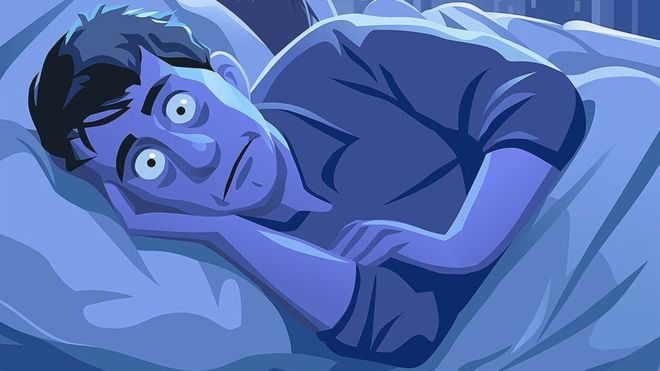
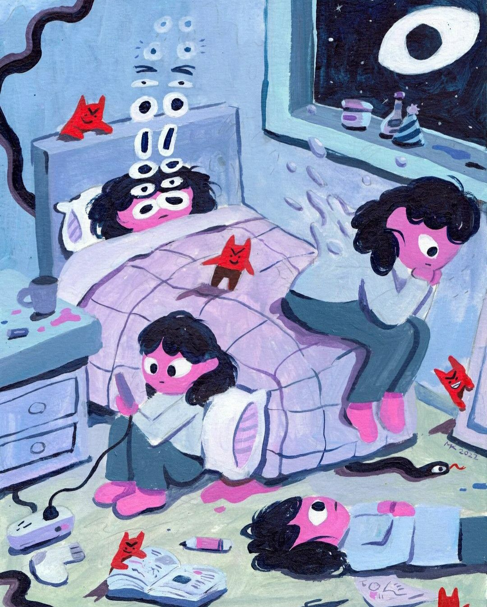

Why Do People Suffer from Insomnia?
Insomnia does not come from a single cause; it usually develops from a combination of different factors. Understanding these factors helps explain why it feels so persistent and difficult to manage.
Multiple Causes, Not a Single Reason
Insomnia does not come from a single cause; it usually develops from a combination of different factors. Understanding these factors helps explain why it feels so persistent and difficult to manage.
Psychological Factors
Stress, anxiety, and depression often keep the brain in a constant state of alertness, making it impossible to relax at night. People may lie awake replaying the day’s events or worrying about what will happen tomorrow. Mental health conditions such as generalized anxiety disorder are strongly linked with chronic insomnia.
Behavioral and Lifestyle Factors
Modern habits make sleep harder. The heavy use of phones and computers late at night exposes the brain to artificial light, disrupting the circadian rhythm. Drinking coffee or alcohol late in the day, irregular sleep schedules, and lack of exercise can also worsen sleep quality. Even the habit of "trying too hard" to sleep can keep the mind awake.

Environmental Factors
Noise, light, temperature, or an uncomfortable bed may interfere with sleep. Even small disturbances, like a phone notification sound, can be enough to trigger wakefulness.
My Personal Experience
For me, long-term insomnia has often been tied to both psychological and lifestyle reasons. On stressful nights before exams or deadlines, I notice my thoughts become uncontrollable, and even if my body is tired, my brain refuses to slow down. At other times, my habit of scrolling on my phone late at night makes it even harder to fall asleep. Over the years, these patterns have reinforced each other, making insomnia feel like an unbreakable cycle.